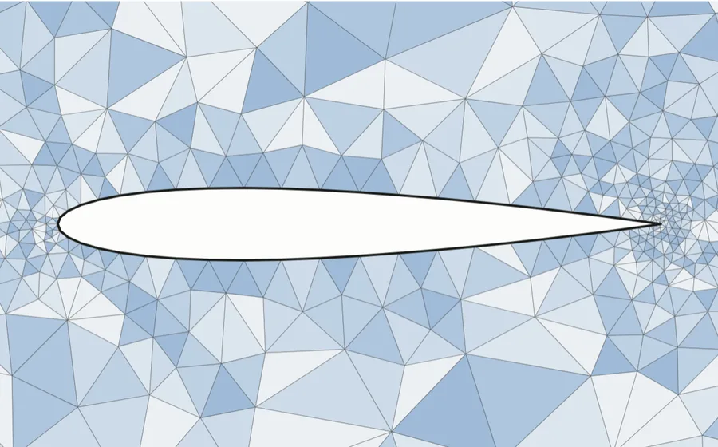
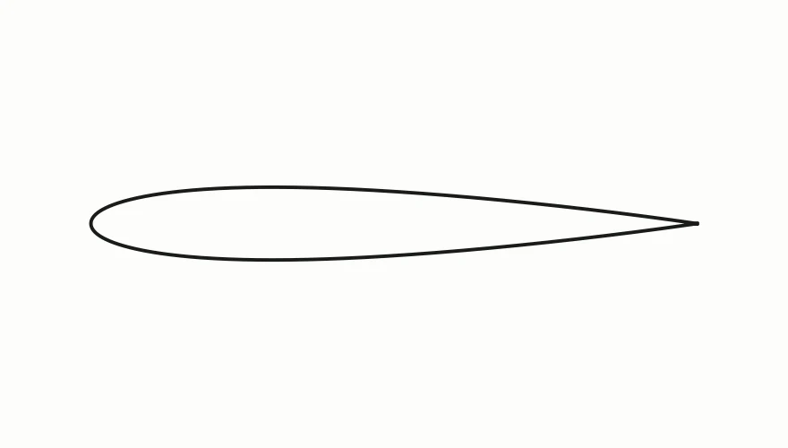
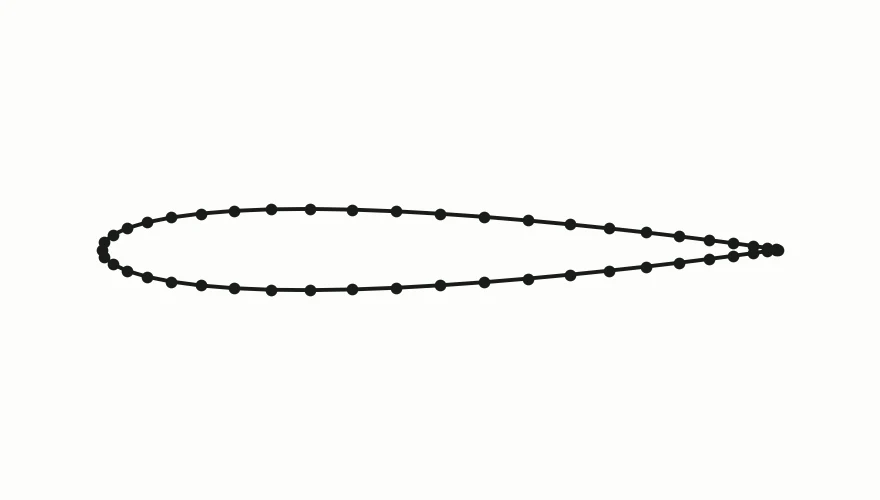
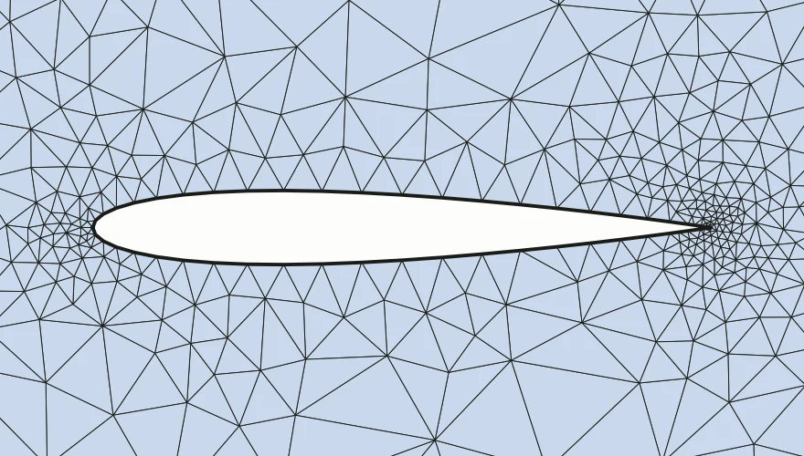
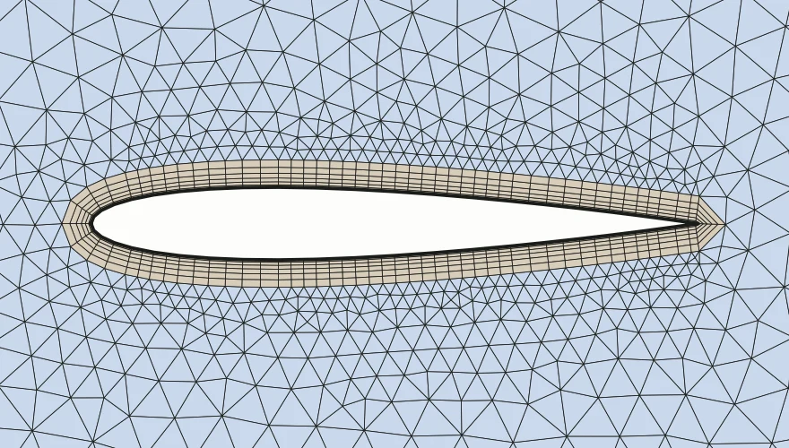
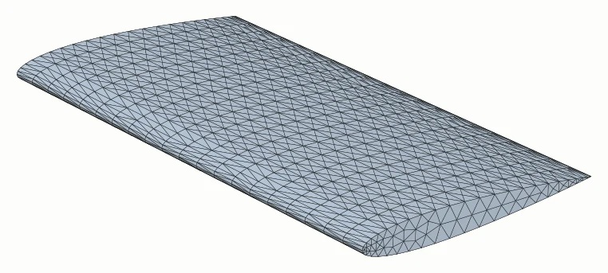

cpp-mesher
A triangle mesher I wrote in C++ to learn how meshing works.
By Varun Rao
- linkedin.com/in/varun-rao
- GitHub
- github.com/ru7herford
- Code
- github.com/ru7herford/cpp-mesher

I wanted to learn how meshing works, so I wrote a mesher.
A mesh cuts a shape into small triangles. Simulation programs, like the ones that predict air flow, compute on those triangles.
A thin triangle, one with a tiny angle, can make their results inaccurate. So a mesher keeps every angle above a target. Here it is 30°.
This page shows my mesher doing that, one point at a time.
Meshing has four steps. This project does step 3.

The shape
A smooth curve, as drawn in a CAD program.

Points on its edges
A mesh can only join points, so the curve is divided into 48 points.
- this project

Triangles
The area around it filled with triangles, none of them thin.

Thin layers at the wall
Flow solvers stack thin cells (grey) where the air changes fastest.

In 3D the same steps go one level up: points on the edges, triangles on the surfaces (left), then the volume filled with tetrahedra (triangle pyramids) or hexahedra (bricks).
My mesher works in five steps. Step through each one.
A mesh can only join points. So first the shape's edges are marked with points.
This shape, a slot, needs only its 8 corners. A curved edge, like the airfoil's, is divided into many points.
Start with one big triangle around the whole shape. Add the points one at a time.
The rule: no point may be inside the circumcircle of any triangle (Delaunay, 1934). A new point removes every triangle whose circumcircle (dashed) contains it, then joins the gap.
This yes-or-no test uses exact arithmetic, so rounding errors cannot make the mesh invalid.
The circumcircle rule does not depend on the shape. Here one of its edges (orange) is crossed by other triangles.
Flipping the crossing triangles puts the edge back (Sloan, 1993).
The big triangle from step 2 also filled the space outside the shape. Delete every triangle outside it (grey) or in a hole.
A couple of flips then tidy up. Orange triangles are thin.
A thin triangle has a large circumcircle for its shortest edge \(\ell\). With \(R\) the circumcircle's radius:
That is 1 at 30°, and bigger means thinner. A new point goes at the circumcentre (×). If that point is too close to an edge of the shape (it encroaches on the edge), that edge is split in half instead (Ruppert, 1995).
Watch the thin triangles disappear, one point at a time.
Thin triangles left. Click or drag to jump.
It worked on every shape I tried. Here is how I checked, and where it stops.
How I know it works
- 105,686 nearly impossible left-or-right questions, all answered right. Ordinary maths got 11,972 of the hardest 65,536 wrong.
- 312 random shapes, half with a hole. Every mesh came out valid.
- Shewchuk's Triangle, the standard mesher, reaches the same angles with fewer triangles. Mine has 1.1 to 1.7 times as many, because I kept the simplest rule.
What it cannot do
- Targets above 33° can run forever on some shapes. I stop at 100,000 points.
- Next to a corner sharper than 60°, a few thin triangles are left on purpose. Fixing them would never end.
- Straight edges only. A curved edge must come in as points, and new points go on the straight segments, not on the original curve.
The ideas come from these papers. The code is mine.
- Delaunay (1934): no point inside the circumcircle of any triangle. paper
- Bowyer; Watson (1981): adding points one at a time. paper, paper
- Sloan (1993): putting missing edges back by flips. paper
- Ruppert (1995): fixing thin triangles. paper
- Shewchuk (1997): exact left-or-right tests. paper
- Shewchuk (2002): sharp corners. paper
- Kettner et al. (2008): the hard test cases. paper
- Shewchuk: Triangle, the mesher I compare with. website
- Geuzaine and Remacle (2009): gmsh, used only to draw the thin-layer picture on page 3. paper
Build it yourself
You need GCC or Clang (C++20) and CMake. The comments in the code explain each step.
cmake -S . -B build
cmake --build build -j
./build/mesher examples/airfoil.json mesh.vtk